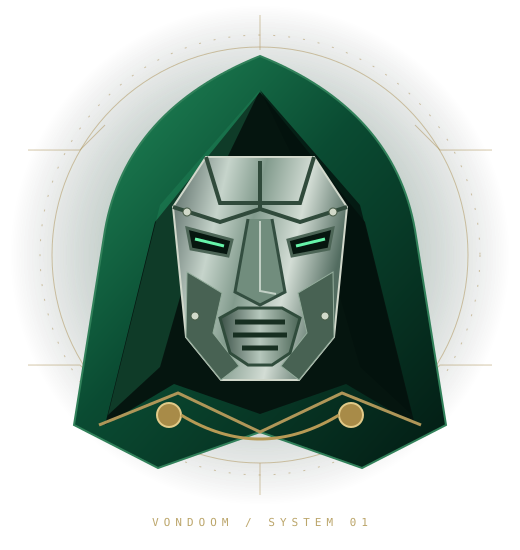
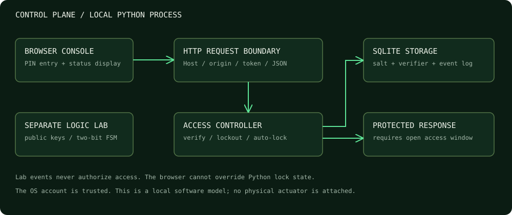
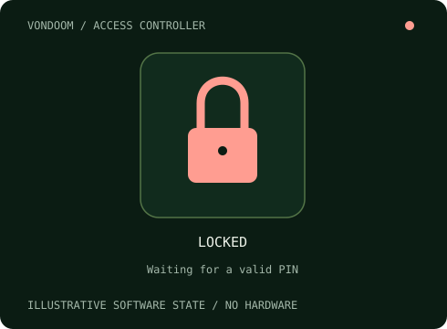
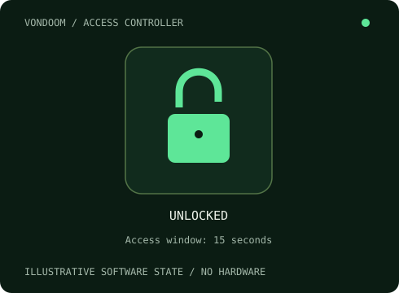
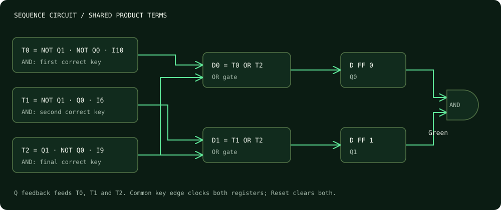

VONDOOM / CONTROLLER 01
OFFLINE
Connect to the local Python controller
Waiting for Python.

VONDOOM / DIGITAL LOCK SYSTEMAn emerald-and-steel command interface for a working Python lock. Inspect every key, state transition, and access decision—from the circuit to the controller.
Python verifies the PIN and owns the lock state. The browser displays the result.
python server.py
and open
http://127.0.0.1:8765
to enable this console. The logic lab below works offline.
Connect to the local Python controller
Waiting for Python.
Available only while the Python controller is unlocked.
Press 10 → 6 → 9 to reach S3. A wrong key resets progress. Any key in S3 returns to S0. This public sequence is independent of your private PIN.
Ready. Submit key 10 to begin.
D shows the last sampled next-state value. Q updates on the same simulated clock edge.
Each column is one submitted key, not elapsed time. The table below gives exact values.
| Edge | Key | Input bus | Old Q | D / New Q | Green | Red |
|---|
Keeps the last 32 edges. Idle holds Q; Reset clears it to 00. Reset starts a new trace.
The browser-only circuit is an educational model. Access decisions stay inside the Python process.

ASCII digits, bounded JSON requests, same-origin checks and a process token. The server binds only to 127.0.0.1.
A serialized controller validates the whole PIN. SQLite stores a salted verifier, failed-attempt count, cooldown deadline and bounded event journal.
Successful verification opens a 15-second window. Authorization checks enforce expiry even if the browser stops polling. Restart always begins locked.


For input B₃ B₂ B₁ B₀, each product selects exactly one four-bit value. ¬ means NOT; ∧ means AND; ∨ means OR.
I₁₀ = B₃ ∧ ¬B₂ ∧ B₁ ∧ ¬B₀ I₆ = ¬B₃ ∧ B₂ ∧ B₁ ∧ ¬B₀ I₉ = B₃ ∧ ¬B₂ ∧ ¬B₁ ∧ B₀
D₁ = (¬Q₁ ∧ Q₀ ∧ I₆) ∨ (Q₁ ∧ ¬Q₀ ∧ I₉) D₀ = (¬Q₁ ∧ ¬Q₀ ∧ I₁₀) ∨ (Q₁ ∧ ¬Q₀ ∧ I₉) Green = Q₁ ∧ Q₀ Red = ¬(Q₁ ∧ Q₀)
D flip-flops sample D on a key-submit edge. Reset has priority. With no edge, both state bits hold.
| Q | Key 10 | Key 6 | Key 9 | Other |
|---|---|---|---|---|
| 00 | 01 | 00 | 00 | 00 |
| 01 | 00 | 10 | 00 | 00 |
| 10 | 00 | 00 | 11 | 00 |
| 11 | 00 | 00 | 00 | 00 |
| Q₁ | Q₀ | Green | Red |
|---|---|---|---|
| 0 | 0 | 0 | 1 |
| 0 | 1 | 0 | 1 |
| 1 | 0 | 0 | 1 |
| 1 | 1 | 1 | 0 |
Moore output: Green depends on the current state, after the edge. It is not a combinational function of the current key.

| Key | B₃ B₂ B₁ B₀ | I₁₀ | I₆ | I₉ |
|---|
Four states require ⌈log₂4⌉ = 2 flip-flops. A four-bit input has 2⁴ = 16 values. Exhaustive verification compares 4 × 16 = 64 state/input pairs.
A uniformly random three-key sequence has one successful combination out of 16³ = 4096, or 12 bits of theoretical entropy. Because the lab sequence is published, it has no secrecy.
A uniformly chosen n-digit PIN has 10ⁿ possibilities and n log₂10 bits of theoretical entropy: about 19.93 bits for six digits. Human-chosen PINs are less predictable in quality and usually much weaker.
Five failed guesses trigger a 30-second cooldown, limiting sustained online guessing to at most about 10 guesses per minute, excluding processing time. A six-digit uniform PIN therefore takes about 50,000 minutes on average under this simplified online model. Offline attacks against a copied verifier are a different threat.
Gate evaluation is O(1). PIN derivation is O(c), where c = 600,000 PBKDF2-HMAC-SHA256 iterations; input length is bounded. The event journal retains 200 records. No image recognition, model downloads or cloud service is required.
Use Gray order 00, 01, 11, 10 on the state axis. With a one-hot decoder, D₁ is high only at (01, I₆) and (10, I₉); D₀ only at (00, I₁₀) and (10, I₉). These isolated cells yield the product terms shown above. Impossible multi-hot decoder outputs are not additional key inputs.
The complete six-variable truth table uses Q₁ Q₀ B₃ B₂ B₁ B₀. See the notebook and docs/truth-table.csv for all 64 rows. This implementation uses three shared state/input product terms, two OR gates, a Green AND gate, inverters and two D registers. Gates are a logical model, not a chip count or an electrical timing simulation.
Software event handlers replace a physical clock/debounce circuit. Auto-repeat keydown events are ignored; mouse clicks are distinct submissions. A physical design would additionally need synchronization, debounce, propagation-delay analysis and an actuator driver.
This is a local educational access controller, not a door actuator, encrypted vault or production identity system. The protected endpoint demonstrates software authorization; its fixed message is not a secret.
The local OS account and filesystem are trusted. A user who can change the program or its database can bypass this lock. Active cooldowns and auto-lock use a monotonic clock. On restart, the saved wall-clock deadline restores the cooldown; system-clock changes across restarts remain outside this local model’s protection. Other local programs can interact with a loopback server. Never expose this development server publicly.
Run the notebook for reproducible demonstrations, exhaustive gate verification and timing experiments. Run
python -m unittest discover -s tests -v
for the automated test suite. No private PIN, database or runtime log belongs in your repository.